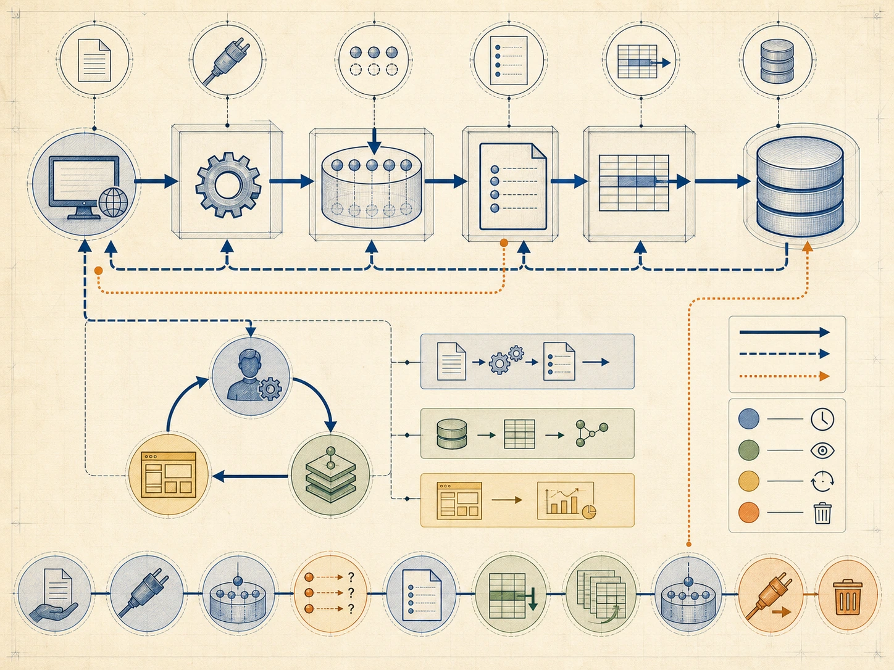

位置
主机、端口、库名
把教师在网页上提交的回复写入数据库，显示处理结果，并归还连接
 VER. 2608
Built with impress.js
VER. 2608
Built with impress.js
说明教师回复的 SQL 更新、页面结果与资源释放
以下独立样例沿用教材评价模式，TCno 是教学班号
| 字段 | 示例值 | 从哪里来或表示什么 |
|---|---|---|
| Tno | 19950018 | 服务端已验证的登录教师身份 |
| TCno | 81001-01 | 回复表单选择的教学班 |
| Sno | 20180001 | 被回复的学生 |
| Assess | 希望增加练习 | 这条已存在的评价 |
| Feedback | 下周补充例题 | 教师本次填写的回复 |
本例 ClassAssess 以 (Sno,Tno,TCno) 唯一定位评价；将原为 NULL 的 Feedback 更新为回复内容
JDBC 统一 Java 调用接口，厂商驱动负责与 DBMS 通信

数据库迁移可能涉及连接地址、驱动、SQL 方言、类型转换、权限和表结构
数据源提供连接目标、账号与驱动信息，应用据此取得连接
主机、端口、库名
用户名、密码和权限
DBMS 与对应驱动
01
02DriverManager.getConnection(URL, user, password) → Connection
DataSource.getConnection() → ConnectionDataSource 可以由应用服务器或连接池统一配置；应用代码不应把凭据散落在业务方法中
拿到 Connection 后，才能创建语句并执行 SQL
| API | 主要职责 | 常见调用 |
|---|---|---|
DataSource | 取得连接 | getConnection(...) |
Connection | 管理连接和事务边界 | 创建语句、提交、关闭 |
Statement | 执行固定 SQL | 无绑定参数 |
PreparedStatement | 执行参数化 SQL | ?、setXXX() |
CallableStatement | 调用存储过程 | 输入输出参数 |
ResultSet | 读取查询结果 | next()、getXXX() |
查询取行，更新取行数；execute() 的布尔值不表示业务成功
| 方法 | 本例调用 | 应用读取什么 |
|---|---|---|
| executeQuery() | 查询某教学班评价 | ResultSet，再逐行取列值 |
| executeUpdate() | 更新一条 Feedback | 更新计数，按驱动约定解释 |
| execute() | 调用 compGPA | 判结果类型，取 OUT 值 |
execute() 的 true 表示首个结果为 ResultSet；false 时查 getUpdateCount()，−1 表示当前无结果。多结果需继续遍历
本例输出为 DECIMAL；没有有效成绩时，页面显示“暂无成绩”
01
02
03
04
05
06
07
08
09String call = "{CALL compGPA(?,?)}";
try (Connection conn = dataSource.getConnection();
CallableStatement cs = conn.prepareCall(call)) {
cs.setString(1, "20180001");
cs.registerOutParameter(2, Types.DECIMAL);
cs.execute(); // 本例过程没有行集和更新结果
BigDecimal gpa = cs.getBigDecimal(2);
String display = gpa == null ? "暂无成绩" : gpa.toPlainString();
}正常数据得到 3.33；无有效学分得到 null。getFloat() 读取 SQL NULL 时会得到 0，若用它，必须紧接 wasNull() 区分。过程签名需与实际 DBMS 对齐
先取得连接，再执行、读结果，最后按逆序释放
DataSource，获取 ConnectionResultSet、更新行数或过程输出，并执行业务逻辑ResultSet → Statement → Connection 逆序关闭或归还JDBC 4 以后驱动可能由服务机制自动发现；任一步异常都要进入资源释放路径，try-with-resources 可覆盖成功和异常路径
输入值进入 SQL，查询结果再回到 Java 变量
| 方向 | 负责什么 | 使用要求 |
|---|---|---|
| 参数绑定 | 把 Java 值绑定到占位符 | 不拼接 SQL 结构 |
| 类型映射 | 转换 SQL 与 Java 类型 | 匹配 setXXX／getXXX |
| 结果读取 | 移动游标并读取当前行 | 先 next()，再 getXXX() |
参数化可降低 SQL 注入风险，但不替代权限、业务校验和事务控制
tno 来自登录身份；tcno 来自已校验的教学班选择
01
02
03
04
05
06
07
08
09
10
11
12String sql = "SELECT Sno, Feedback FROM ClassAssess "
+ "WHERE Tno = ? AND TCno = ? ORDER BY Sno";
try (PreparedStatement ps = conn.prepareStatement(sql)) {
ps.setString(1, tno);
ps.setString(2, tcno);
try (ResultSet rs = ps.executeQuery()) {
while (rs.next()) {
String sno = rs.getString("Sno");
String feedback = rs.getString("Feedback");
}
}
} // conn 由外层管理假设上一页查询返回两条评价，按 Sno 排序
| 操作 | 游标位置 | next() 结果 | 可读 Sno |
|---|---|---|---|
| 刚取得 ResultSet | 第一行之前 | 尚未调用 | 不能读取 |
| 第一次 next() | 第一行 | true | 20180001 |
| 第二次 next() | 第二行 | true | 20180002 |
| 第三次 next() | 最后一行之后 | false | 不能再读取 |
getString("Feedback") 读到 null，与空字符串是两种值。ResultSet 是 Java 端的查询结果对象；8.2 的显式游标由数据库程序管理
try-with-resources 在正常或异常退出时关闭已取得的资源
| 资源 | 关闭顺序 | 目的 |
|---|---|---|
ResultSet | 第一层 | 释放结果集资源 |
| 语句对象 | 第二层 | 释放执行资源 |
Connection | 最后一层 | 关闭或归还连接 |
| 池中的连接 | close() 后交回池 | 避免反复建立物理连接 |
异常退出时，try-with-resources 逆序关闭资源；连接归还池后可再次借用
Model 包含业务规则；DAO 是它调用的数据访问层
| 位置 | 收到什么 | 产出或动作 |
|---|---|---|
| Controller | 登录身份与表单数据 | 校验格式并调用业务方法 |
| Model／Service | 教师 19950018 的回复请求 | 判断是否任课、能否回复 |
| DAO／JDBC | 已获准的值与连接 | 更新评价，交回执行结果 |
| View | 成功、拒绝或错误结果 | 显示回复或可理解的提示 |
页面样式由 View 管理；任课权限由业务层及其数据访问实现
教师号取自已验证身份，不能直接相信表单里的 Tno
01
02
03
04
05
06
07
08
09String sql = "UPDATE ClassAssess SET Feedback = ? "
+ "WHERE Sno = ? AND Tno = ? AND TCno = ?";
try (PreparedStatement ps = conn.prepareStatement(sql)) {
ps.setString(1, feedback); // 下周补充例题
ps.setString(2, sno); // 20180001
ps.setString(3, tno); // 19950018，服务端登录身份
ps.setString(4, tcno); // 81001-01
int count = ps.executeUpdate();
}业务层校验任课权限、检查 count 并管理事务；参数绑定保持 SQL 结构与输入值分离
本例采用“匹配行数”计数，业务层负责提交或回滚
| 观察结果 | 本例解释 | 交给 View 的结果 |
|---|---|---|
| 拒绝任课权限 | 尚未执行更新 | 无权回复 |
| 更新计数为 0 | 没有匹配的评价 | 未保存，核实目标评价 |
| 计数为 1 且提交成功 | 指定评价已保存 | 显示新回复 |
| SQL 报错或提交失败 | 不能宣称保存成功 | 报错并处理事务状态 |
驱动按实际改变行数计数时，相同内容可能返回 0；提交由事务控制完成，网络中断后可能需核实结果
DAO 封装访问方法，ORM 对应表行与对象属性
如 updateFeedback(...)：集中回复更新的 SQL、四个参数和更新结果
如表的 Feedback 列对应对象的 feedback 属性，减少常规读写代码
Model → DAO → JDBC → DBMS；或 Model → 持久层／DAO → ORM → DBMS
开发者定义事务、权限和数据规则，并检查生成 SQL 的查询性能
下面假设连接池上限为 2，暂时不能新建连接
| 时刻 | 连接状态 | 请求会发生什么 |
|---|---|---|
| A、B 已借用 | 两条都在使用 | C 暂时等待 |
| A 完成并 close() | 归还一条可用连接 | C 可借到连接继续执行 |
| A 忘记归还 | 仍被标记为占用 | 等待超过上限则报错 |
| A 的连接已失效 | 不应继续借出 | 池检测、淘汰或重建 |
close() 通常关闭逻辑连接并归还池；事务和会话状态按约定复位，慢 SQL 与泄漏分别监测
说明登录校验、保存、显示与连接归还的顺序，以及各层处理的失败情况
Controller 校验请求，DAO 使用 PreparedStatement；setXXX 只绑定值，不拼接 SQL 结构
更新读取影响行数；查询先 next() 再 getXXX()；无论正常返回还是报错，都按获取资源的逆序关闭或归还
Controller 调用相应方法，Model 判断能否回复，DAO 写入数据库，View 显示结果
记录异常、事务结果与连接借还；核查授权、SQL 方言和慢查询，覆盖 DAO／ORM 中的数据库操作
compGPA 各选哪种 JDBC API？?、setXXX、next()、getXXX 各自做什么？ResultSet、语句或连接会有什么风险？资源应按什么顺序释放？execute() 后如何判断并取得 ResultSet、更新行数或过程输出？